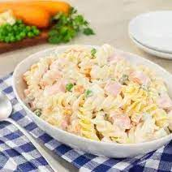

Receta: Ensalada Rusa
Ingredientes
- 4 papas medianas
- 2 zanahorias medianas
- 1 taza de chicharos frescos
- media taza de mayonesa
- 1 cucharada de zumo de limon
- media taza de crema
- 1 cucharada de sal
- media cucharada de pimienta negra
- 1 diente de ajo
- 2 tallos de apio rebanado
- 1 cebolla rebanada
Pasos
Cocine las papas y las zanahorias en agua hirviendo con sal en una cacerola grande a fuego medio alto durante 10 minutos o hasta que estén tiernas cuando las pinche con un tenedor. Agregue los chícharos cuando falten 5 minutos para que estén listas. Escurra bien y enfríe levemente.
Mezcle la mayonesa, la crema, la sal, el tomillo y la pimienta en un recipiente mediano hasta incorporarlos completamente. Agregue el apio y el cebollín a las verduras cocidas y mezcle bien. Agregue la mayonesa preparada y revuelva suavemente para cubrir bien. Tape.
Refrigere la ensalada hasta servir.
